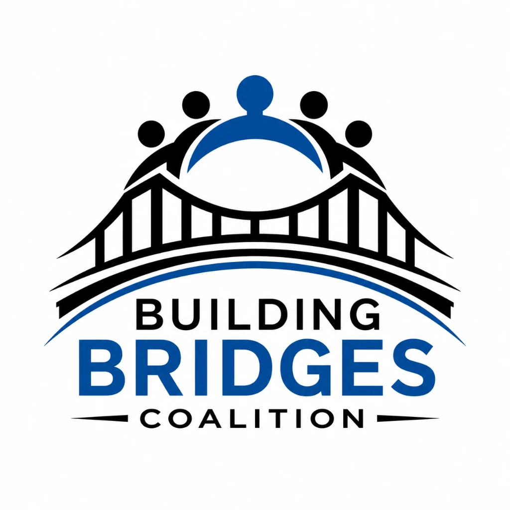

01
BabyKohen.com
A public memorial for Kohen’s life. Visitors may light a candle and leave a respectful word in his honor.
Kohen Kartier Wiley was one year old. E5 Enclave and the Building Bridges Coalition support his family’s call for transparency, access to relevant footage through lawful process, and a complete public accounting.
The record must be public. The record must be complete.
This page relies on identified public reporting. It distinguishes reported facts from public demands and does not use graphic imagery.
Each surface has one clear job, so mourning is not exploited and advocacy is not diluted.
A public memorial for Kohen’s life. Visitors may light a candle and leave a respectful word in his honor.
The action hub: public record, footage demands, community witness, and peaceful consumer advocacy.
This page identifies the organizations behind the work, documents sources, and provides a stable public-interest record.

The Building Bridges Coalition is partnering with E5 Enclave Incorporated to produce and maintain the Justice for Kohen campaign websites. Building Bridges carries community relationships and public witness; E5 contributes nonprofit infrastructure, digital production, and institutional stewardship. The work is designed to honor Kohen, support the family’s pursuit of truth, and help the public act without speculation or abuse.
The campaign challenges a system in which corporate surveillance may be accessible to law enforcement while grieving families lack a clear, equal path to obtain the same evidence through lawful process.
Until Walmart adopts a transparent family-access policy and responds to the footage demand, supporters are asked to redirect discretionary spending and tell the company why.
Preserve and provide relevant footage to Kohen’s family or counsel through the appropriate lawful process.
Adopt an equal-access policy giving victims’ families a clear and timely request path.
Publish transparent rules for preservation, disclosure, withholding, and appeal.
This is a peaceful consumer-action and public-petition campaign. It advocates policy change and transparency; it does not claim that Walmart caused Kohen’s death.
Readers should be able to inspect the reporting behind the public record.
Florida nonprofit and 501(c)(3) public charity. EIN 99-3822441.
Questions about this page, source corrections, or campaign coordination may be directed through E5’s public contact channel.
No donation or personal information is required to read the record or use the campaign’s public action materials.